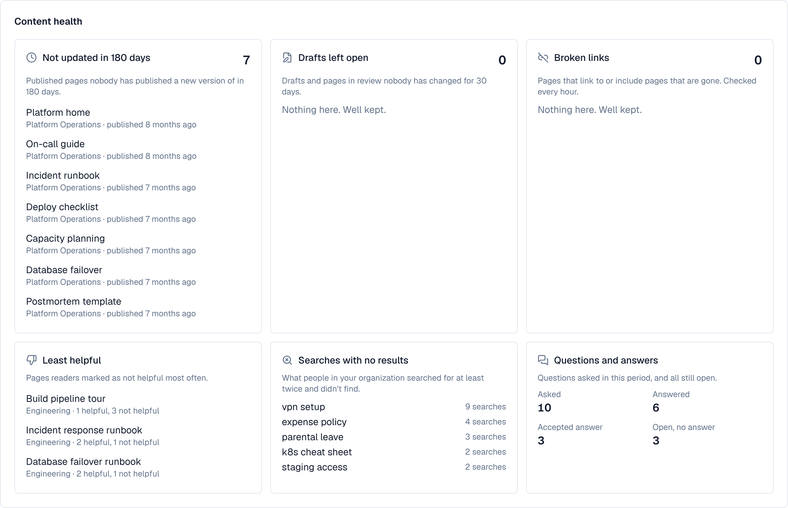

Page analytics count how often published pages are read, by how many people and for how long, and point out content that needs care. They need a Pro licence. There is nothing to switch on: with Pro, views are recorded and the screens appear; without it, nothing is recorded. How readers and space admins use the screens is in the user guide's Analytics.

1. What is recorded
- A view each time a published page is shown to someone allowed to read it. The same signed-in person on the same page within 10 minutes is one view. Views through API tokens aren't counted.
- Reading time, while the tab is visible, up to 30 minutes per view.
- Anonymous readers of public spaces are counted as views without any identity, each view on its own, within a limit per address.
- Searches with no result for pages, as words and a count per organization and day, without who searched.
- Drafts, history and other screens aren't counted. Recording a view raises no event and isn't audited.
2. Who sees what
| Screen | Who | Shows |
|---|---|---|
| Analytics (left navigation) | Everyone signed in | Views, readers and publishing across the spaces they may see; the most viewed pages and spaces; content health |
| A space's Analytics tab | Anyone who reads the space | The same for one space, and per page |
| The space's People tab | The space's admins | Who reads most and who publishes most (100 of each) |
| Searches with no results | settings:write | Searches made at least twice in the period that found nothing |
| Drafts left open | Editors of the space; across spaces, super admins | Drafts and pages in review unchanged for 30 days |
Names of people who published follow the space's rule for showing people: readers from another organization and anonymous readers see counts only. Export CSV gives the most viewed pages (up to 10,000) with counts, never people.
3. Content health
| List | Means |
|---|---|
| Not updated in 180 days | Published pages with no newer version for 180 days |
| Drafts left open | Drafts and pages in review nobody changed for 30 days |
| Broken links | Pages linking to or including pages that are gone, unpublished or in the trash; checked every hour |
| Least helpful | Pages readers most often marked as not helpful |
| Searches with no results | What people searched for at least twice and didn't find |
| Questions and answers | Questions asked, answered and accepted in the period, and those still open |
4. How long data is kept
| Data | Kept |
|---|---|
| Each view (raw) | 90 days |
| Who read on which day (for exact reader counts) | 25 months |
| Daily totals per page and space | As long as the page or space exists |
| Searches with no result | 90 days |
These periods are fixed: there is no setting yet to change them or to stop recording who read what. Erasing a person's data (Personal data) removes what they read and leaves their views as anonymous counts.
5. Jobs and timing
| Job | When | Does |
|---|---|---|
| wiki-analytics-rollup | Every 15 minutes | Adds up the day's views; today's numbers trail by up to 15 minutes |
| wiki-analytics-links | Hourly | Reads new versions of published pages for links |
| wiki-analytics-retention | Nightly at 02:45 UTC (editable) | Removes views and searches past their retention |
They are listed in Settings → Advanced → Scheduled jobs (Scheduled jobs). Days are UTC days: a reader far from UTC sees a day's views split at UTC midnight.